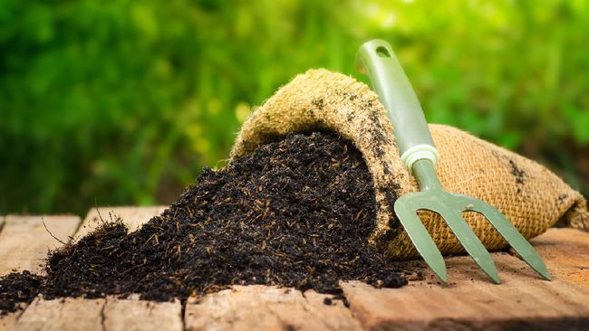
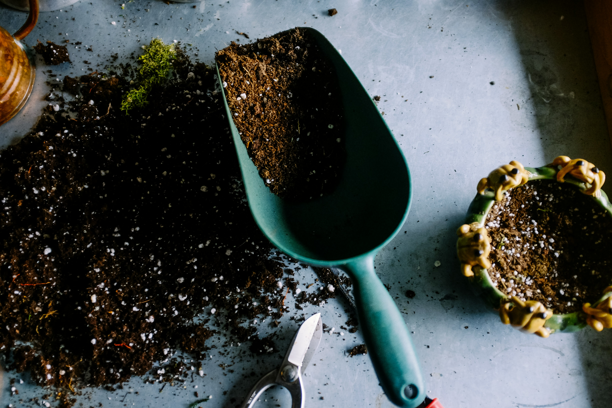

Sejarah Kompos
Proses pengomposan sudah ada sejak ribuan tahun yang lalu. Bukti sejarah
menunjukkan bahwa pengomposan telah dilakukan oleh peradaban kuno seperti
Mesir, Mesopotamia, dan Romawi. Mereka menggunakan teknik penguraian alami
untuk memperbaiki tanah pertanian mereka. Di Cina kuno, para petani
memanfaatkan limbah organik dari rumah tangga dan pertanian untuk menjaga
kesuburan tanah. Di Eropa, praktek pengomposan mulai menyebar pada abad
pertengahan, dan seiring berjalannya waktu, ilmu pengetahuan tentang
pengomposan semakin berkembang.

Di abad ke-20, pengomposan mulai mendapatkan perhatian lebih serius sebagai
metode pengelolaan sampah yang ramah lingkungan. Sir Albert Howard, seorang
agronomis Inggris, adalah salah satu tokoh penting dalam perkembangan modern
metode pengomposan. Dia mengembangkan teknik pengomposan aerobik yang
dikenal sebagai “Indore Method,” yang dinamai berdasarkan kota di India di
mana dia melakukan penelitian. Pendekatan ini menjadi fondasi pengomposan
modern yang ramah lingkungan dan berkelanjutan.
Pengertian Proses Pengomposan

Daur ulang rumah tangga melalui pengomposan adalah salah satu cara
paling ramah lingkungan untuk mengelola limbah organik dan
mengurangi jejak karbon individu. Proses pengomposan memanfaatkan
mikroorganisme alami untuk menguraikan bahan-bahan organik seperti
sisa makanan dan sampah taman, yang kemudian menghasilkan
kompos—pupuk alami yang kaya akan nutrisi. Ini adalah metode yang
tidak hanya membantu mengurangi sampah yang masuk ke tempat
pembuangan akhir, tetapi juga berkontribusi pada peningkatan
kualitas tanah, mendukung pertumbuhan tanaman, dan memperkaya
ekosistem lokal.
Kompos merupakan hasil dari penguraian bahan organik yang diuraikan oleh
mikroorganisme seperti bakteri, jamur, dan cacing tanah. Bahan organik yang
bisa dikomposkan meliputi sisa makanan, dedaunan, rumput, kertas, dan bahan
organik lainnya.
Pengenalan Dasar Kompos
Kompos merupakan hasil dari penguraian bahan organik yang diuraikan oleh
mikroorganisme seperti bakteri, jamur, dan cacing tanah. Bahan organik yang
bisa dikomposkan meliputi sisa makanan, dedaunan, rumput, kertas, dan bahan
organik lainnya.
Proses pengomposan terdiri dari beberapa tahap, yaitu:
-
Pengumpulan bahan organik: Sisa makanan dan limbah kebun
dikumpulkan sebagai bahan dasar kompos.
-
Penguraian mikroorganisme: Mikroorganisme alami, seperti
bakteri dan jamur, mulai menguraikan bahan organik menjadi materi yang
lebih sederhana.
-
Pengolahan dan pematangan: Bahan organik yang sudah
terurai kemudian diolah menjadi kompos yang matang, siap digunakan
sebagai pupuk alami.
Pengomposan tidak hanya membantu mengurangi sampah organik, tetapi juga
menghasilkan pupuk alami yang bermanfaat bagi tanaman. Selain itu, kompos
membantu meningkatkan kesuburan tanah, mengurangi erosi, serta menjaga
keseimbangan nutrisi di dalam tanah.
Fakta Unik Tentang Kompos
- Kompos dapat meningkatkan kapasitas tanah dalam menahan air hingga 20%.
- Kompos membantu mengurangi emisi gas rumah kaca dari tempat pembuangan sampah.
- Satu ton kompos dapat menghilangkan 1 ton karbon dioksida dari atmosfer.
Manfaat
1. Mengurangi Sampah Rumah Tangga
Kompos membantu mengurangi jumlah limbah organik rumah tangga yang biasanya berakhir di tempat pembuangan sampah. Sisa makanan, daun, dan bahan organik lain yang dibuang setiap hari dapat diubah menjadi kompos alih-alih menjadi sampah.
Dengan mengomposkan bahan organik ini, jumlah sampah yang perlu dikelola oleh sistem pengelolaan sampah menjadi lebih kecil. Ini juga membantu mengurangi tumpukan sampah di tempat pembuangan akhir (TPA) yang semakin padat, dan mengurangi biaya pengangkutan serta pengelolaan sampah oleh pemerintah.
2. Menghasilkan Pupuk Alami Yang Kaya Nutrisi
Kompos adalah pupuk alami yang kaya akan nutrisi penting seperti nitrogen, fosfor, dan kalium, yang semuanya penting untuk pertumbuhan tanaman. Nutrisi ini dilepaskan secara perlahan ke dalam tanah sehingga tanaman mendapatkan pasokan nutrisi yang stabil. Ini berbeda dengan pupuk kimia sintetis yang bisa melepaskan nutrisi terlalu cepat dan dalam jumlah besar, yang dapat menyebabkan ketidakseimbangan nutrisi bagi tanaman. Kompos juga mengandung mikroba yang bermanfaat yang membantu memecah bahan organik dan meningkatkan kualitas tanah.

3. Memperbaiki Struktur Tanah
Kompos memperbaiki struktur tanah dengan membuat tanah lebih gembur dan lebih mudah diolah. Tanah yang gembur memungkinkan akar tanaman tumbuh lebih kuat dan menyebar lebih luas. Selain itu, tanah yang dikomposkan memiliki aerasi yang lebih baik, memungkinkan akar mendapatkan lebih banyak oksigen, yang sangat penting untuk pertumbuhan tanaman yang sehat. Tanah liat yang keras bisa diperbaiki dengan kompos, karena kompos membantu melembutkan teksturnya dan meningkatkan drainase, sementara tanah berpasir yang cepat mengering bisa dibuat lebih tahan air dengan penambahan kompos
Metode

1. Metode komposting terbuka
metode pembuatan kompos yang dilakukan tanpa menggunakan wadah atau
kontainer tertutup. Dalam metode ini, bahan-bahan organik, seperti
sisa makanan, daun, rumput, dan limbah kebun, dikumpulkan dan disusun
dalam tumpukan di area terbuka, seperti halaman rumah atau kebun.
2. Metode komposting tertutup
adalah metode pembuatan kompos yang dilakukan dengan menggunakan wadah
atau kontainer tertutup untuk menampung bahan-bahan organik. Metode
ini dirancang untuk mengontrol proses penguraian bahan organik dengan
lebih baik, menjaga kelembapan, dan mengurangi bau serta risiko
menarik hama. Komposting tertutup sering kali dilakukan menggunakan
komposter yang tersedia di pasaran atau bisa juga menggunakan wadah
yang dibuat sendiri.

3. Metode Vermi Komposting
metode pembuatan kompos yang menggunakan cacing, terutama cacing
tanah, untuk menguraikan bahan organik dan menghasilkan pupuk organik
yang kaya nutrisi. Proses ini memanfaatkan aktivitas biologis cacing
yang membantu mempercepat penguraian bahan organik dan meningkatkan
kualitas kompos yang dihasilkan.